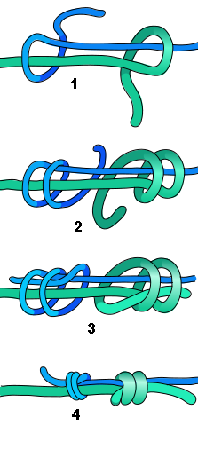

NUDOS DE UNION
Los nudos de unión son aquellos que se utilizan para unir dos cuerdas o cables de manera segura, asegurando que no se deshagan bajo tensión. Son esenciales en actividades como la navegación, la escalada, el alpinismo, la pesca y muchos otros campos donde es necesario conectar varias cuerdas o hilos. Dependiendo de la situación y las características de las cuerdas que se quieran unir, existen diferentes tipos de nudos de unión, cada uno con sus ventajas y aplicaciones específicas.
NUDO CUADRADO (NUDO DE RIZO)
- El nudo cuadrado (también conocido como nudo de rizo) es uno de los nudos de unión más comunes y fáciles de realizar. Se utiliza para unir dos cuerdas del mismo grosor y material. Su forma es simple, ya que se hace pasando cada cuerda por encima y por debajo de la otra, asegurándose de que ambas se enlacen correctamente.

NUDO DE PESCADOR
- El nudo de pescador es otro nudo de unión muy utilizado, especialmente en la pesca, pero también en la escalada y otras disciplinas. Este nudo es muy fuerte y seguro, ya que se basa en la creación de dos nudos de rizo en cada extremo de las cuerdas, los cuales se ajustan firmemente al unirse.
NUDO DE OCHO DOBLE
- El nudo de ocho doble es un nudo muy fuerte y confiable que se utiliza comúnmente en actividades de escalada y rescate. Aunque técnicamente es un nudo de sujeción, también puede usarse para unir cuerdas cuando se requieren uniones fuertes y seguras. Se trata de un nudo en forma de "8" que forma una especie de bucle en el que se pueden pasar las cuerdas a través.
NUDO DE UNION DE PESCADOR DOBLE
- El nudo de pescador doble es una variante del nudo de pescador, pero se hace utilizando dos nudos de pescador en cada cuerda. Esta variante se emplea cuando se requiere una unión extremadamente fuerte y segura entre cuerdas, y suele ser más difícil de deshacer que el nudo de pescador tradicional.

NUDO DE RIZO DOBLE
- El nudo de rizo doble es una variación del nudo cuadrado, pero con un toque adicional: se da un segundo paso para asegurar las cuerdas aún más. Aunque es más robusto que el nudo cuadrado, sigue siendo relativamente fácil de hacer.